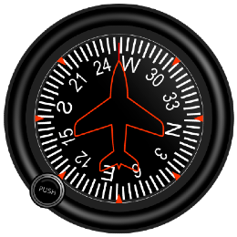

LEARN TO FLY
This interactive primer will help you understand the principles and techniques of flight and the various technical aspects of navigating and flying an airplane. With this knowledge you will be able to understand the nuances of flying airplanes on the Microsoft Flight Simulator 2020.
Sir Isaac Newton
Daniel Bernoulli
The Wright Brothers (Wilbur and Orville)


Newton’s First Law of Inertia states, in part, that: a body at rest tends to remain at rest, and a body in motion tends to remain moving at the same speed and in the same direction.
This simply means that, in nature, nothing starts or stops moving until some outside force causes it to do so. This is referred to as the inertia of an object. An airplane at rest on the ground will remain at rest unless a force strong enough to overcome its inertia is applied. Once it is moving, on the ground or in the air, its inertia keeps it moving, subject to the various other forces acting on it. These forces may speed up its motion, slow it down, or change its direction.
Newton’s Second Law implies that: When a body is acted upon by a constant force, its resulting acceleration (rate of increase in speed) is inversely proportional to the mass of the body and is directly proportional to the applied force.
This law is about the forces involved in overcoming Newton’s First Law of Inertia. It covers both changes in direction and speed, including starting up from rest (positive acceleration) and coming to a stop (negative acceleration, or deceleration).
Newton’s Third Law states that: Whenever one body exerts a force on another, the second body always exerts on the first, a force that is equal in magnitude but opposite in direction.
In an airplane, the propeller moves and pushes back the air; consequently, the air pushes the propeller (and thus the airplane) in the opposite direction, forward. In a jet airplane, the engine pushes a blast of hot gases backward; the force of equal and opposite reaction pushes against the engine and forces the airplane forward.
The Earth's Atmosphere in which flight is conducted is an envelope of air that surrounds the earth. Air is a mixture of gases and has mass, weight, and indefinite shape. Air, like any other fluid, is able to flow and change its shape when subjected to even minute pressures because of the lack of strong molecular cohesion. For example, it will completely fill any container into which it is placed, expanding or contracting to adjust its shape to the limits of the container.
Though air is very light, it has mass and is affected by the attraction of gravity. Therefore, like any other substance, it has weight, and because of its weight, it has force. Since it is a fluid substance, this force is exerted equally in all directions, and its effect on bodies within the air is called pressure.
A half century after Sir Newton presented his laws, Daniel Bernoulli, a Swiss mathematician, explained how the pressure of a moving fluid (liquid or gas) varies with its speed of motion.
Specifically, he stated that an increase in the speed of movement or flow of a moving fluid would cause a decrease in the pressure exerted by the fluid and conversely, a decrease in its speed of flow would cause an increase in the pressure exerted. This is the fundamental principle on which flight is based.
Airfoil Shape
The cross-section of a wing is shaped like an Airfoil as shown above. When this shape moves through the air, the the distance that the airstream needs travel above is greater than what it needs to travel below, and hence it flows at a higher speed above than below. By Bernoulli's Principle, this results in a higher pressure below and a lower pressure below. This difference in pressure translates to a force that pushes the wings and the attached airplane up into the air.
These laws and scientific principles were used by the Wright Brothers to build the first ever flying machine that was the genesis of the airplanes we use so widely today. Moving a machine forward, following Newton's Laws of Motion, using the power generated by an engine, was a relatively simpler challenge. The far more complex challenge was to lift a heavier-than-air body up into the air, keep it up, and bring it back gently to the ground.
An airplane in flight can rotate about three axes. Axes can be considered as imaginary lines that pass through the airplane's centre of gravity.
- Longitudinal Axis: The axis that extends lengthwise through the fuselage from the nose to the tail. The movement around this axis is referred to as the Roll.
- Lateral Axis: The axis that extends crosswise from wingtip to wingtip. The movement around this axis is referred to as the Pitch.
- Vertical Axis: The axis that passes vertically through the centre of gravity. The movement around this axis is referred to as the Yaw.
Centre of Gravity
The Centre of Gravity (CG) of a body can be considered as an imaginary point at which the entire weight of that body is assumed to be concentrated. In an airplane, the centre of gravity can be considered to be the point at which the airplane would balance (not rotate on its own across any of the axes) if it was suspend (theoretically in the case of a real airplane, but this could be demonstrated with an airplane model) at that point.
The location of the centre of gravity affects the stability of the airplane. If it is located too forward or behind lengthwise, the pitching motion will be impacted. If it is too left or right crosswise, the rolling motion will be impacted. An airplane is designed and constructed to have an optimal CG when empty. When it loaded with people and cargo, and filled with fuel, the weight and therefore the CG can be impacted. Therefore, when loading an airplane, the distribution of the weight across the airplane must be given careful consideration.
The Logitudinal Axis extends lengthwise through the fuselage from the nose to the tail. The motion around this axis is referred to as the Roll. The airplane rolls when it needs to turn left or right. which are used to take off or climb in flight, land or descend in flight and turn the airplane in flight and on the ground.
The Lateral Axis extends from wingtip to wingtip. The motion around this axis is referred to as the Pitch. The airplane pitches up or down when it needs to climb or descend.
The Vertical Axis passes vertically through the centre of gravity. The motion around this axis is referred to as the Yaw. The airplane yaws along with a roll when it needs to turn left or right. Roll and yaw work together to provide a way to rotate the airplane around a vertical axis. A roll produces a slipping turn, while a yaw alone produces a skidding turn, but both together produces a coordinated turn.
Airplane control systems comprise of the structural components (also referred to as the control surfaces) and the pilot controls (which may be mechanical in smaller airplane or electromechanical in larger airplane). The systems are further devided into primary and secondary systems.
Primary Control System
The primary control system is used by the pilot to control the movement of the airplane in flight. The primary controls are responsible for the three main movements of the airplane (pitch, roll and yaw). The three components are explained below.
We will explain the Secondary System in the next lesson on Forces in Flight.
Ailerons control the roll about the longitudinal axis. The ailerons are attached to the trailing edge of each wing. The left and right ailerons move in the opposite direction from each other to make the airplane roll. When the left aileron is pushed down (and the right gets pushed up) there is an increased force created under the left wing which causes the airplane to roll to the right. The reverse aileron positions roll the airplane to the left. Ailerons are controlled by the pilot by moving the control wheel or joystick right and left.
Elevators control the pitch about the lateral axis. The elevators are attached to the trailing edge of the horizontal stabiliser. Both elevators move in the same direction (up or down). When the elevators are pushed down there is an increased upward force under the horizontal stabiliser which causes the airplane to pitch down. In the reverse direction, the airplane pitches up. Elevators are controlled by the pilot by pushing the control wheel or the joystick forward (elevator up, nose down) or pulling it backward (elevator down, nose up).
The Rudder controls the yaw about the vertical axis. The rudder is attached to the trailing edge of the vertical stabiliser. When the rudder is pushed to the left there is an increased force that pushes the vertical stabiliser to the right, causing the airplane to yaw left. When the rudder is pushed to the right the vertical stabiliser is pushed to the left causing the airplane to yaw right. The rudder is controlled by the pilot using the left and right foot pedals.
Four forces act on an airplane at any time whether on the ground or in flight and the relationship between the forces is important to understanding and controlling flight. The four forces are:
- Thrust: is the force that pushes the airplane forward. This is an artificial force generated by the propeller or the jet engines. The propeller or engines push the air backwards and by Newton's Third Law, this generates an qual and opposite force that pushes the airplane forward.
- Drag: is the force that opposes the forward motion of the airplane. This is a naturally occuring force, caused by a combination of friction and the push back from the air as the airplane tries to move forward through it.
- Lift: is the force that pushes the airplane upwards, allowing it to take off from the ground into the air and to climb to higher altitudes while in flight. This is an artificial force generated by moving the airfoil shaped wings through the air at a high speed, using Bernoulli's principle.
- Weight: is the force caused by the gravitational pull of the Earth on any body. This is a naturally occuring force, the same as the weight we experience for any object.
By modifying the forces of thrust, drag, lift, and weight as required, pilots can achieve controlled flight for an heavier-than-air airplane. The forces work in opposing pairs, countering each other, weight and lift form one pair and drag and thrust form the other pair. Quite logically, one artificial generated force is used to counter one naturally occurring force. The interaction of the forces at various stages of flight are described below:
- Taxiing (for Take Off): When the airplane is stationary on the ground and needs to start moving forward on the runway, the force holding it back is the Drag, caused mainly the friction between the wheels and the runway surface. The engines need to generate an amount of Thrust greater than the Drag to start moving forward.
- Take Off: When the airplane needs to take off, leaving the ground and starting its climb up in the air, the force holding it down is the Weight of the airplane. By increasing the speed and using the control surfaces, the airplane needs to generate an amount of Lift greater than the Weight to take off.
- Climbing: Once the airplane has left the ground, the Drag changes from frictional forces on the ground to the push back from the air it is flying into and some friction in the air. The engines need to continue to generate Thrust greater than the drag to keep moving forward. Since the airplane needs to climb higher, it also needs to generate an amount of Lift greater than the Weight to continue climbing.
- Cruising: When the airplane reaches the desired altitude and doesn't need to climb any more, the Lift can be reduced to become equal to the Weight, so the airplane does not climb but does not descend due to the pull of the Weight either.
- Landing: When the airplane needs to descend, finally coming in to land on the ground, the Lift must actually be reduced gradually so that the Weight of the airplane will slowly bring it towards the ground. The descent has to be very gradual so the Lift is still required but it just needs to be controlled so that it is just a little less than the Weight. When the airplane is descending, the gravitational force counters drag and assists forward movement, causing the airplane to pick up speed even without increasing the Thrust.
- Taxiing (after Landing): Once the has landed, it is still moving quite fast and needs to slow down and come to a stop. The Thrust can now be reduced to zero and in fact, brakes need to be applied to increase the Drag (in the form of friction between the brakes and the wheels) to slow the plane down and bring it to a gradual stop. In advanced and large airplane engines, the Thrust can be reversed to help slow down the airplane faster.
The secondary control system supports the primary control system to assist the pilot in controlling the airplane. Secondary flight control systems consist of wing flaps, spoilers, and trim systems.
- Flaps: are control surfaces attached to the trailing edge of the wing. They are used to increase lift, especially during take off and landing. When landing they also serve to add some drag to reduce speed. Flaps can be extended when needed and retracted into the wing’s structure when not needed. In larger airplanes flaps can be extended and retracted in steps, giving further control over the additional lift or induced drag.
- Spoilers: are control surfaces attached to the top of wings to reduce lift and increase drag by "spoiling" the airflow over the wing. Spoilers are most often used to control rate of descent for accurate landings as they allows the aircraft to descend without gaining speed. Spoilers are also deployed to help reduce ground roll after landing. By destroying lift, they transfer weight to the wheels, improving braking effectiveness.
- Trim Systems: are control surfaces attached to the primary control surfaces. When the pilot needs to maintain a straight and level flight, ideally no changes to the control surfaces should be required. However, there often small forces that cause a slight change in the airplane's direction. Instead of the pilot contantly making changes to the primary control surfaces, trim systems allow for small changes to their settings that offset the effect of the small forces, thus relieving the pilot of the effort to constantly manage the primary control surfaces. While most commonly used to maintain straight and level flight, trimming can also be used in any phase of flight, for example to maintain a constant rate of climb or descent. And, while elevator trim is the most common, trimming can also be done on the rudder and ailerons.
While the difference in air pressure above and below the wing does provide Lift, that is not the only contributor. The movement of the airplane (specifically the wing) at a high speed through the air generates a force that also contributes to the Lift. In fact, this is the component of Lift that is controllable by the pilot using a concept known as the Angle of Attack (AoA). The AoA is defined as the angle between the chord line of an airfoil (the wings on an airplane) and the direction of the wind as it strikes the leading edge of the wing as can be seen from the image above.
The force of the wind hitting the wing at an angle produces a force that pushes the wing in a direction that is perpendicular to the angled wing. Using vector arithmetic, this force can be broken up into two components: a vertical component which is the Lift and a horizontal component which is the Drag. Using a combination of airspeed and the AoA, pilots can control the amount of Lift required depending on the stage of the flight.
Since flying an airplane at a certain airspeed with the wing at an angle of attack generates both Lift and Drag, increasing the AoA will not keep on increasing the Lift without limit. In fact, as the AoA is increased it not only increases the Drag component, it also spoils the airflow over the wings which further reduces the Lift. There is therefore, an optimal combination of airspeed and the AoA that generates the maximum possible Lift. Increasing the AoA any further will start to actually reduce the Lift and in fact there is a point at which increasing the AoA will reduce the Lift so much that it is not sufficient to keep the airplane in the air anymore. Similarly, reducing the airspeed too much will also result in insufficient Lift.
This condition in flight where the Lift is not sufficient to keep the airplane in the air is referred to as a Stall. The airspeed below which this occurs is referred to as the Stall Speed. The AoA above which a stall occurs is referred to as the Critical or Stall Angle of Attack. This is a dangerous condition and corrective action must be taken immediately by increasing the airspeed or reducing the AoA as required.
Navigation is the process of planning and executing and possibly recording, the movement of a person or a vehicle from one place to another. The term vehicle includes surface (land or sea) transport such as a cars, trucks, trains and ships, as well as non-surface transport such as airplane. Successful navigation involves taking a vehicle from one place to another in a reasonable time without breaking any laws related to transport or endangering the safety of those on board or in the path of the vehicle.
Airplane and ship navigation is a lot more complex than land transport navigation primarily because there are many more visual aids to navigation on land than on sea or in the air. Air navigation is further significantly more complex for multiple reasons. Airplanes travel at relatively high speeds, leaving less time to calculate or change direction en route. Airplanes cannot stop in mid-air to ascertain their position at leisure. A surface vehicle can get lost, run out of fuel, and await rescue without significant impact, except time delays. Other than specialised military airplane, commercial or private airplane cannot run out of fuel in the air as they don't have mid-air refuelling options.
There are two main navigation modes:
- Visual Flight Rules (VFR)
- Instrument Fight Rules (IFR)
Visual Flight Rules (VFR)
In this form of navigation, the pilot relies on visual points of locational reference on the surface below, usually in conjunction with an aeronautical chart. This is a chart that depicts controlled airspace, radio navigation aids and airfields, as well as hazards to flying such as mountain and main-made tall structures such as radio towers or skyscrapers. It also includes sufficient ground detail including towns, roads, wooded areas, and water bodies, all of which can be used as reference points to in visual navigation. The information is regularly updated in what are known as notices to airmen, or NOTAMs. This form of navigation in an airplane is usually practiced over or close to land and under visual meteorological conditions (VMC) for flight, which are conditions in which pilots have sufficient visibility to observe the terrain they are flying over and other airplane around them.
Instrument Flight Rules (IFR)
In this form of navigation, the pilot will navigate exclusively using instruments, radio navigation aids and satellite based positioning systems, or as directed by air traffic control. This form of navigation is the only option in instrument meteorological conditions (IMC), which is the opposite of VMC in that pilots do not have sufficient visibility to observe the terrain or other airplane due to weather conditions or at night. IFR can be used even when visibility is good if the pilot so desires. IFR needs radio and satellite guidance systems en-route and at airports. So pilots cannot fly under IMC in areas that do not have IFR support.
The main step in navigation planning is deciding the optimal path from the origin to the destination. Generally the pilot should choose a route that will get the airplane to its destination in the shortest possible time, while taking care to avoid airspace that may be restricted or not safe to fly through due to terrain or weather conditions. The planning must also factor in the air traffic control (ATC) units to contact along the route for guidance and emergency support and the appropriate frequencies they can be contacted on.
Once the route is determined, the fuel requirement can be calculated, also taking into account the weight of the airplane and the expected altitude and cruising speed, and the wind direction. A tailwind (wind in the direction of the flight) will shorten flight time, a headwind (wind against the direction of the flight) will increase it.
Finally, the pilot should have in mind some alternative plans in case the route cannot be flown for some reason, unexpected weather conditions being the most common. At times the pilot may be required to file a flight plan for an alternate destination and to carry adequate fuel for this. The more work a pilot can do on the ground prior to departure, the easier it will be in the air.
The chosen route is plotted on the map, and the lines drawn are called the track. The aim of all subsequent navigation is to follow the planned track as accurately as possible. In VFR flight plans The pilot may often choose to follow a clearly visible feature on the ground such as a railway track, river, highway, or coastline.

Commercial airplane are not allowed to operate along a route that is out of range of a suitable place to land if an emergency such as an engine failure occurs. The ETP calculations serve as a planning strategy, so flight crews always have an option in an emergency event, allowing a safe diversion to their chosen alternate.
Alternative Routes
Every flight plan must have an alternative airport selected for landing, and a route mapped to that airport, in case it is not possible to land at the original destination airport for any reason. For long flights, in addition the alternative to the destination, airports along the route must be identified for landing in case of emergencies on the airplane, such as equipment malfunction or failure.
For this, flight planning uses a concept known as Equal Time Point (ETP). ETP can be the point in the flight where it would take the same time to continue flying on to the destination or return back to the departure airport. On longer flights, ETP can also be the distance between two airport options at any point if an unplanned landing is required at any point during the flight. ETP calculations are based on several parameters including the altitude, speed, wind direction, weather and equipment status (for example, if one of two engines fails).
A flight plan also has a Point of No Return (PNR), which is the point on a flight at which a airplane has just enough fuel to return to the airport from which it departed. Beyond this point that option is closed, and the airplane must proceed to some other destination.
Generally, the origin or destination airports are the best points to land at from a convenience perspective but since safety is more important, these calculations help determine the best option keeping both in mind but prioritising safety.
The Reference Line (Datum)
There are four main directional references used in air navigation, depending on the datum used.
-
Degrees True (ºT): Relative to True North
True North (also referred to as Geographic North) is the direction along the Earth's surface towards the geographic North Pole. Directions measured with the line to the North Pole as the reference are referred to as True North directions. The North Pole is a fixed reference point and does not change under any conditions. -
Degrees Magnetic (ºM): Relative to Magnetic North
A magnetic compass relies on the Earth's magnetic field which can be differently aligned at different locations on the Earth. Thus, the North indicated by a magnetic compass is referred to as the Magnetic North and may not be exactly aligned with True North. The difference in angle between the True North and Magnetic North reference lines is known as the Variation. -
Degrees Compass (ºC): Relative to Compass North
Any magnetic or ferrous material or electrical equipment on or near an airplane compass will affect the local magnetic field and may deflect the compass needle away from the Magnetic North. The North shown by a compass at any point in time is referred to as the Compass North, which may be different from the Magnetic North. The difference in angle between the Magnetic North and Compass North reference lines is known as the Deviation. -
Degrees Relative (ºR): Relative to an arbitrary reference line
This directional reference is used to determine the direction of travel with reference to a specific points, usually a radio station that is transmitting a signal, with the reference line being the line from the airplane to the station.
The angle between the Heading and the Course is referred to as the Wind Correction Angle (WCA). In a zero-wind condition, the Heading will be the same as the Course (WCA will be 0 degrees).
Direction of Airplane Travel
-
Course
The Course of an airplane is the path it intends to take to get from an origin to a destination point. For short flights it may be a straight line between the origin and destination airports. For long flights, the course may not be a straight line, rather it will be a series of connected straight lines between continuous sets of two points along the way. The goal of the pilot is to keep the airplane on the Course. -
Heading
The Heading of an airplane is the direction its nose is pointed towards. Airplanes in flight are subjected to wind forces that cause a change to the flight direction from the intended direction. To stay on its Course, an airplane must actually fly in a Heading that takes into factor the wind direction such that the wind forces correct the flight direction such that it actually stays on Course. -
Track
The Track is the actual path made over the ground in flight. If the Heading is set correctly, the Track will be the same as the Course. If the Heading is not corrected for the wind and is set to be aligned with the Course the wind will push the airplane in a different direction, a Track which will not be aligned with the Course. This will take the airplane away from its intended destination.
Non-Directional Beacon (NDB)
Direction finding (DF), or radio direction finding (RDF), is the measurement of the direction from which a received signal is transmitted. By combining the direction information from two or more suitably spaced receivers, the source of a transmission can be located via a procedure known as triangulation. RDF systems can be used with any radio source, although very long wavelengths (low frequencies) require very large antennas, and are generally used only on ground-based systems.
To overcome the limitations of RDF, a combination of non-directional beacons (NDB) and automatic direcion finders (ADF) came into use. NDB signals follow the curvature of the Earth, so they can be received at much greater distances at lower altitudes. However, NDB signals are also affected more by atmospheric conditions, mountainous terrain, coastal refraction and electrical storms, particularly at long range.
There are four types of non-directional beacons in the aeronautical navigation service:
- En-route NDBs (used to mark airways)
- Approach NDBs
- Localizer beacons (used in conjunction with an Instrument Landing System)
- Locator beacons (used in conjunction with an Instrument Landing System)
Automatic Direction Finder (ADF)
NDB navigation consists of two parts — the automatic direction finder (ADF) equipment on the aircraft that detects an NDB's signal, and the NDB transmitter.
The ADF needle points directly at low-frequency non-directional beacons (NDB) but it does not indicate a heading to the station. To get the magnetic bearing to the station, the ADFs fixed compass card requires the pilot to take the relative bearing to or from the station (the angle between the aircraft’s nose or tail and the NDB), and then add the relative bearing to the current magnetic heading to get the magnetic bearing to the station. ADF equipment determines the direction or bearing to the NDB station relative to the aircraft by using a combination of directional and non-directional antennae to sense the direction in which the combined signal is strongest. The pilot may use this bearing to draw a line on the map to show the bearing from the beacon. By using a second beacon, two lines may be drawn to locate the aircraft at the intersection of the lines. This is called a cross-cut.
This bearing may be displayed on a radio magnetic indicator (RMI). In order to track toward an NDB (with no wind), the aircraft is flown so that the needle points to the 0 degree position. The aircraft will then fly directly to the NDB. Similarly, the aircraft will track directly away from the NDB if the needle is maintained on the 180 degree mark. With a crosswind, the needle must be maintained to the left or right of the 0 or 180 position by an amount corresponding to the drift due to the crosswind.
Very high frequency omni-directional range (VOR) is a type of short-range radio navigation system for airplanes, enabling them to determine their position and stay on course by receiving radio signals transmitted by a network of fixed ground radio beacons. A VOR system comprises of a VOR receiver fitted in the airplane and the VOR stations on the ground. There are three types of VOR navigational stations: VOR, VOR-DME (VOR plus distance measuring equipment), and VORTAC (VOR plus the military's tactical air navigation system). Each VOR station can further be classified according to its range, terminal, low altitude, or high altitude. VORs can only be received line-of-sight, so if there is an obstruction between the airplane and the VOR, the receiver not receive a reliable signal even though it is within the station's range.
VOR Radials
The radio signals transmitted by a VOR station are referred to as radials since they are broadcast in all directions in a circle around the station, 360 radials, one at each degree around the circle. The receiver determines the radial it is on and that indicates the position of the airplane relative to the VOR station. For example, if the receiver receives a 360-degree radial signal, then the airplane is exactly north of the station, if it receives a 90-degree radial signal it is exactly east of the station and so on.
The radials transmitted by a VOR station are aligned to the magnetic north (not the true north). Before using VOR for navigation it must be tuned and identified. Each VOR station has its own frequency and Morse code identifier. The correct radio frequency must be dialled into the receiver to receive the signals. The Morse code is sent as an audio signal that can be heard over the airplane's audio system, which needs to configured to listen. Each VOR has a unique three digit Morse code identifier so by listening to the code the pilot can confirm the receiver is tuned in to the intended VOR.
Since the VOR station transmits the signals as radials (imagine the spokes of a bicycle wheel) the distance between the radials increases the further the airplane is from the station (and decreases as the airplane gets closer to the station). The sensitivity of the VOR instrument when displaying the radial the airplane is on is accordingly higher or lower, since far away from the VOR station the airplane must travel a longer distance to move from one radial to another, whereas closer to the VOR station the airplane may change radials within a very short distance.
VOR Instrument
The VOR indicator has two important positions: the course index on top of the VOR indicator and the reciprocal course index at the bottom of the VOR indicator. The VOR instrument has an OBS (Omni Bearing Selector) knob that the pilot uses to select VOR radials by placing them above the course index (on top of the VOR indicator) or below the reciprocal course index (at the bottom of the VOR indicator).
The bearing selector must be used in conjunction with the To/From flag on the face of the instrument, which indicates whether the airplane is heading towards the VOR station or away from it. It may also show OFF which indicates one of the following:
- The course index will take the airplane neither To or From the VOR station.
- The airplane is directly above the VOR station.
- The signal from the VOR station is lost.
A needle that shifts Left or Right (either as a straight line shifting or as a pendulum, depending on the type of instrument) called a Course Deviation Indicator (CDI) shows the pilot how many degrees and in which direction from the selected radial the airplane is flying. The direction of deflection tells the pilot where he is relative to the radial, while the dots on the instrument's face tell the pilot how many degrees he is off his course. Each dot represents a 2-degree deflection from the desired course. There are 10 degrees of deflection on either side of the center disk, creating 20 degrees total indicating capability.
To get a bearing to the VOR station, the pilot turns the OBS knob until the CDI needle is centred and the To/From display shows To. The number shown on top of the dial, the course index, is the magnetic bearing from the airplane to the VOR station. For example, if the reading shows the 90° radial, the airplane is 90° from magnetic north, which is east of the station (or the station is to the west of the airplane). If for the same radial reading the To/From flag switches to From, the airplane is now on the west of the station.
One important and potential confusing point is that the VOR radial the airplane is on is no indication of its heading. The airplane could be on the 90° radial but heading north, south, east, west or any other direction. The horizontal situation indicator (commonly called the HSI) is an aircraft flight instrument normally mounted below the artificial horizon in place of a conventional heading indicator. It combines a heading indicator with a VHF omnidirectional range (VOR) and an Instrument Landing System (VOR-ILS) display. This reduces pilot workload by lessening the number of instruments for the pilot to scan.Flying To/From the VOR Station
To fly towards the VOR station, the pilot must first get the bearing to the VOR station and then set the course (and heading to correct for wind) of the airplane accordingly. Assuming the bearing is determined to be 90°, with the To/From flag showing To, the course of the aircraft (for simplicity we will assume no wind correction and therefore the Heading is the same as the Course) should be set to 90°. Depending on its original heading, the aircraft will have to turn as required to get to the new heading. The position of the CDI needle will indicate whether or not the airplane is on the selected radial. If exactly along the radial the CDI needle will be centered. If the needle drifts off-center the aircraft would be turned towards the needle until it is centered again. The pilot needs to keep the needle centered to follow the course to the VOR station. Reading the movement of the CDI needle and the position and orientation of the airplane can be a bit confusing. If the needle moves left of centre, it means the airplane is drifting to the right of the radial and should be laterally moved to the left to get back on to the radial, and vice versa. To achieve this lateral correction the heading will have to be temporarily adjusted as required until the needle is centered again. When the airplane reaches the VOR station and is flying over it, the CDI needle may oscillate or move to the extreme right or left. This is expected behaviour and no changes to the heading are required. After the aircraft passes over the VOR station the To/From indicator will indicate "From" and the CDI needle will centre itself again. The aircraft is now proceeding outbound on the 90° radial.Distance Measuring Equipment (DME)
>DME is a radio navigation technology, implemented as a combination of ground and airplane equipment, which gives a continuous slant range distance from a DME station by measuring the time taken for a signal transmitted by the aircraft to the station to receive a response. A line-of-visibility between the airplane and ground station is required. An interrogator (the DME equipment on the airplane) initiates an exchange by transmitting a pulse pair, on an assigned channel, to the DME ground station. The channel assignment specifies the carrier frequency and the spacing between the pulses. After a known delay, the DME ground station replies by transmitting a pulse pair on a frequency that is offset from the interrogation frequency by 63 MHz and having specified separation. The calculated distance in nautical miles is displayed on the cockpit instrument.
DME ground stations may be standalone but are usually colocated with a VOR transmitter in a single ground station. When this occurs, the frequencies of the VOR and DME equipment are paired. Such a configuration enables an airplane to determine its bearing and slant range (distance) from the station. The airplane equipment needs to tune in only to the VOR frequency and can listen to the DME signals as well.
Transponders
Squawk Codes
Azimuth guidance operations are where the instrument uses a needle pointer to show relative bearings to, or from, a station or waypoint. Typical automatic direction finder (ADF) indicators provide a form of azimuth guidance. Course deviation indicator operations are where the instrument shows the lateral displacement of the aircraft from a specified track. Deviation from the track may be displayed as angular displacement-like a conventional instrument-landing system (ILS) or VHF omni ranges (VOR) indication. It may also be displayed as a linear distance that can vary in scale when generated by a global navigation surveillance system or multi-sensor navigation system at different phases of flight.

VFR Chart
World Lo
World Hi
Approach Plates
Airport Diagram
An instrument landing system (ILS) is a radio navigation system that provides short-range guidance to aircraft to allow them to approach a runway at night or in bad weather. In its original form, it allows an aircraft to approach until it is 200 feet (61 m) over the ground, within a 1⁄2 mile of the runway. At that point the runway should be visible to the pilot; if it is not, they perform a missed approach. Bringing the aircraft this close to the runway dramatically improves the weather conditions in which a safe landing can be made. Later versions of the system, or "categories", have further reduced the minimum altitudes.
ILS uses two directional radio signals, the localizer(108 to 112 MHz frequency) that provides horizontal guidance, and the glideslope(329.15 to 335 MHz frequency) for vertical. The relationship between the aircraft's position and these signals is displayed on an aircraft instrument, often additional pointers in the attitude indicator. The pilot attempts to maneuver the aircraft to keep these indicators centered while they approach the runway to the decision height. Optional markers provide distance information as the approach proceeds, including the middle marker placed close to the position of the decision height. ILS may also include high-intensity lighting at the end of the runways.
An instrument approach procedure chart (or 'approach plate') is published for each ILS approach to provide the information needed to fly an ILS approach during instrument flight rules (IFR) operations. A chart includes the radio frequencies used by the ILS components or navaids and the prescribed minimum visibility requirements.
An aircraft approaching a runway is guided by the ILS receivers in the aircraft by performing modulation depth comparisons. Many aircraft can route signals into the autopilot to fly the approach automatically. An ILS consists of two independent sub-systems. The localizer provides lateral guidance; the glide slope provides vertical guidance.
Localizer
An instrument landing system localizer, or simply localizer (LOC),[1] is a system of horizontal guidance in the instrument landing system, which is used to guide aircraft along the axis of the runway. In aviation, a localizer is the lateral component of the instrument landing system (ILS) for the runway centerline when combined with the vertical glide slope, not to be confused with a locator, although both are parts of aviation navigation systems. A localizer (like a glideslope) works as a cooperation between the transmitting airport runway and the receiving cockpit instruments. An older aircraft without an ILS receiver cannot take advantage of any ILS facilities at any runway, and much more importantly, the most modern aircraft have no use of their ILS instruments at runways which lack ILS facilities. In parts of Africa and Asia large airports may lack any kind of transmitting ILS system. Some runways have ILS only in one direction, this can however still be used (with a lower precision) known as back beam or "Back Course" which is not associated with a glide slope. A localizer (LOC, or LLZ until ICAO standardisation[6]) is an antenna array normally located beyond the departure end of the runway and generally consists of several pairs of directional antennas. The localizer will allow the aircraft to turn and match the aircraft with the runway. After that, the pilots will activate approach phase (APP).
Glide Slope
Instrument landing system glide path, commonly referred to as a glide path (G/P) or glide slope (G/S), is "a system of vertical guidance embodied in the instrument landing system which indicates the vertical deviation of the aircraft from its optimum path of descent". The pilot controls the aircraft so that the glide slope indicator remains centered on the display to ensure the aircraft is following the glide path of approximately 3° above horizontal (ground level) to remain above obstructions and reach the runway at the proper touchdown point (i.e. it provides vertical guidance). A glide slope station uses an antenna array sited to one side of the runway touchdown zone. The GS signal is transmitted on a carrier signal using a technique similar to that for the localizer. The centre of the glide slope signal is arranged to define a glide path of approximately 3° above horizontal (ground level). The beam is 1.4° deep (0.7° below the glide-path centre and 0.7° above). The pilot (or the autopilot, if using autoland) controls the aircraft so that the glide slope indicator remains centered on the display to ensure the aircraft is following the glide path to remain above obstructions and reach the runway at the proper touchdown point (i.e., it provides vertical guidance).
Airspeed Indicator
The airspeed indicator indicates the airspeed of an aircraft, most often in knots (kn), although kilpmetres per hour (kmph) may also be used. The ASI has standard color-coded markings to indicate safe operation within the limitations of the aircraft. The green arc indicates the normal operating range of the aircraft, from VS1 to VNO. The white arc indicates the flap operating range, VSO to VFE, used for approaches and landings. The yellow arc cautions that flight should be conducted in this range only in smooth air, while the red line (VNE) at the top of the yellow arc indicates damage or structural failure may result at higher speeds.
Attitude Indicator
The attitude indicator, earlier known as the artificial horizon, informs the pilot of the aircraft orientation relative to Earth's horizon, and gives an immediate indication of the smallest orientation change in roll or pitch motion. The miniature aircraft and horizon bar mimic the relationship of the aircraft relative to the actual horizon. Attitude is always presented to users in the unit degrees. However, inner workings such as sensors, data and calculations may use a mix of degrees and radians.
Altimeter
An altimeter measures the altitude of an object above a fixed level. Altitude can be determined based on the measurement of atmospheric pressure. The greater the altitude, the lower the pressure. QFE (Field Elevation) is a pressure setting on the altimeter to set the height above the runway. QNH (Height Above Mean Sea Level) is a pressure setting on the altimeter to set the height above sea level. The most common unit for altimeter calibration worldwide is either hectopascals (hPa) or inches of mercury (inHg).
Turn Coordinator
A turn coordinator (also known as the turn and slip indicator) is actually two instruments in one device. One indicates the rate of turn, or the rate of change in the aircraft's heading. The other indicates whether the aircraft is in coordinated flight, showing the slip or skid of the turn. The slip indicator is actually an inclinometer that at rest displays the angle of the aircraft's transverse axis with respect to horizontal, and in motion displays this angle as modified by the acceleration of the aircraft. The most commonly used units are degrees per second (deg/s) or minutes per turn (min/tr).
Heading Indicator
The heading indicator (also known as the direction indicator) shows the aircraft heading. The heading indicator works using a gyroscope, tied by an erection mechanism to the aircraft yawing plane, i. e. the plane defined by the longitudinal and the transverse axis of the aircraft. As such, any configuration of the aircraft yawing plane that does not match the local Earth horizontal results in an indication error. The heading indicator is arranged such that the gyro axis is used to drive the display, which consists of a circular compass card calibrated in degrees.
Vertical Speed Indicator
The vertical speed indicator (also known as the also known as a Rate of Climb and Descent Indicator)shows the rate of climb or descent. It can be calibrated in metres per second, feet per minute, or knots, depending on country and type of aircraft. It is typically connected to the aircraft's external static pressure source and determines the rate of climb or descent by measuring rate-of-pressure changes. A drop in pressure indicates a climb, an increase in pressure indicates a descent, and no change in pressure indicates level flight.